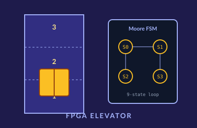

Overview
A Verilog-based elevator controller targeting an FPGA development board, implementing a Moore Finite State Machine that dynamically services a 3-story elevator. The design handles concurrent floor requests, fault conditions, and door-cycle timing.
Architecture
- Moore FSM with a 9-state loop covering idle, ascending, descending, door-opening, door-open, door-closing, and safety/fault states.
- Direction-selection logic that prioritizes the closest pending request to minimize passenger wait time.
- Built-in safety faults that lock the FSM into a recoverable hold state until the fault clears, modeling real-world emergency behavior.
- I/O fully constrained via XDC files mapping the FSM outputs to physical board LEDs and inputs to buttons + clock.
Validation
Simulated each state transition under combinations of concurrent requests, then validated on the FPGA board with LED status indicators for floor position, door state, and fault flags.
What I Learned
How quickly a "simple" state machine grows when real safety behavior is added. Thinking carefully about which states are holding states versus transient states made the design much easier to debug.
← Back to projects